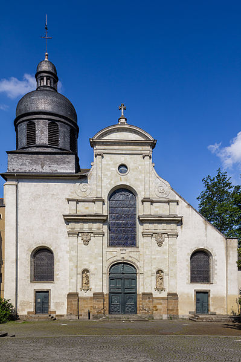

Contactez-nous

Pour toute question ou commentaire, veuillez-nous contacter à l'adresse suivante : ktomalagasyrennes@gmail.com.
ou bien sur nos réseaux sociaux :
Messe :
Tous les 3ème dimanche du mois à 10h30
Adresse :
Eglise Saint Etienne, 8 Carrefour Jouaust, 35000 Rennes
**sur la carte : côté du restaurant "Le Maestro" (en zoomant un peu)